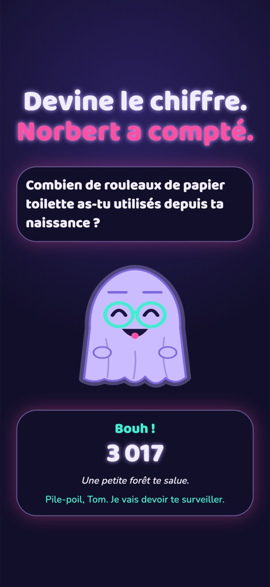
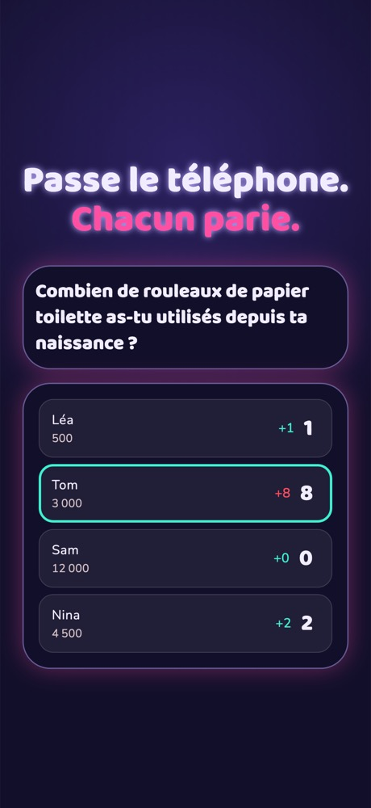
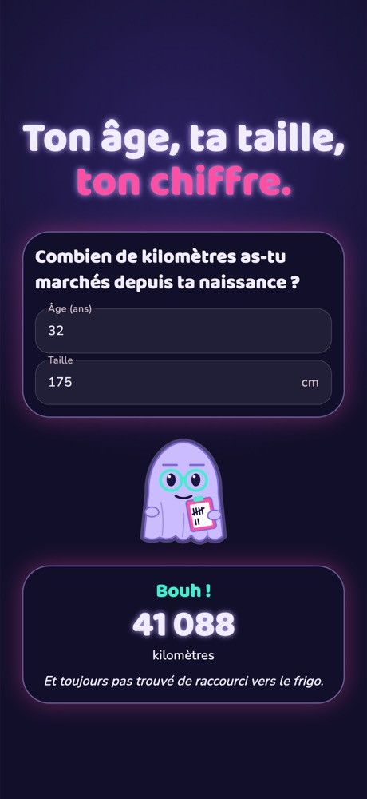
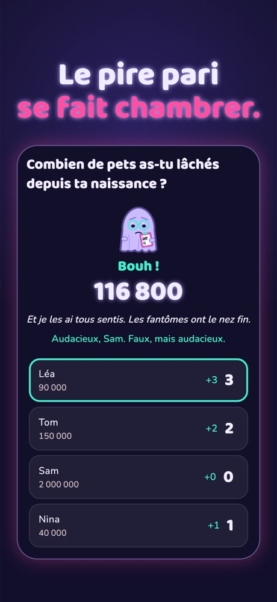
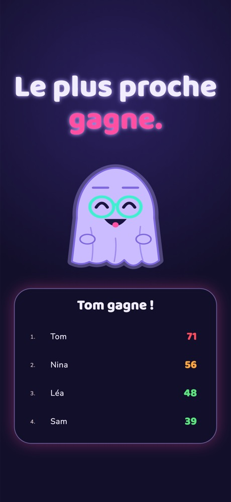
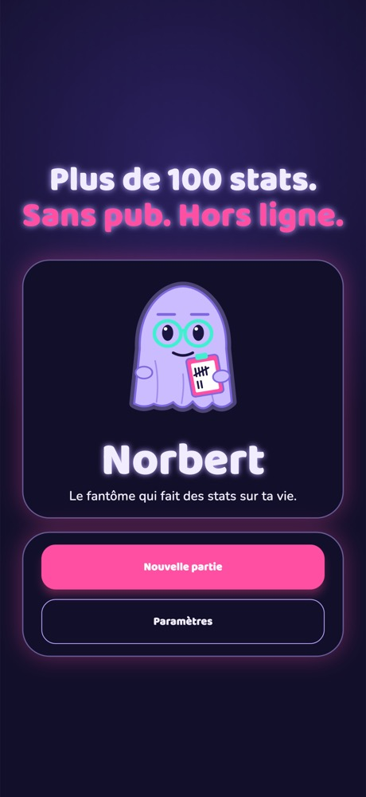

Norbert
Le fantôme qui fait des stats sur ta vie.
Norbert est un fantôme à lunettes qui te suit depuis ta naissance, son carnet à la main. Il a tout compté : les rouleaux de papier toilette, les kilomètres marchés, les litres de sueur.
Faites tourner le téléphone, donnez quelques infos sur vous, et pariez sur le chiffre. Puis Norbert révèle la vérité, et se moque de celui qui était le plus loin.
Les stats sont disponibles en français, anglais, italien, allemand, espagnol et portugais.
Captures d'écran






COMMENT JOUER
1. Renseignez Norbert
La stat demande une ou deux infos, comme ton âge ou ton poids, pour que le résultat parle vraiment de toi. Trop perso ? Passe à une autre stat.
2. Pariez
Chaque joueur, à son tour, entre son estimation du chiffre, sans regarder celles des autres.
3. Bouh !
Norbert surgit avec la réponse, une comparaison pour se rendre compte, et une pique pour le pire parieur.
Les points
Tu marques 1 point pour chaque joueur qui était plus loin que toi. Tombe tout près pour un bonus :
Votre partie, à votre façon
2 à 8 joueurs sur un seul téléphone, 5, 10 ou 15 manches. Une partie interrompue peut être reprise plus tard.
101 stats sur vous
De toute ta vie jusqu'à ce que ton corps fait en ce moment : cheveux poussés, clignements, battements de cœur, pizzas avalées… Des chiffres crédibles, des questions idiotes.
Pas de pub, pas de pistage
Norbert est gratuit. Pas de compte, pas de pub, pas d'achats intégrés, pas de pistage. L'appli fonctionne entièrement hors ligne : ce que vous dites à Norbert reste sur votre téléphone.
Si vous aimez ce que je fais et voulez m'aider à continuer, un café, ça aide beaucoup.
M'offrir un caféCrédits
- Conception et code
- Jeff · Two Pins Studio
- Réalisé avec
- Flutter